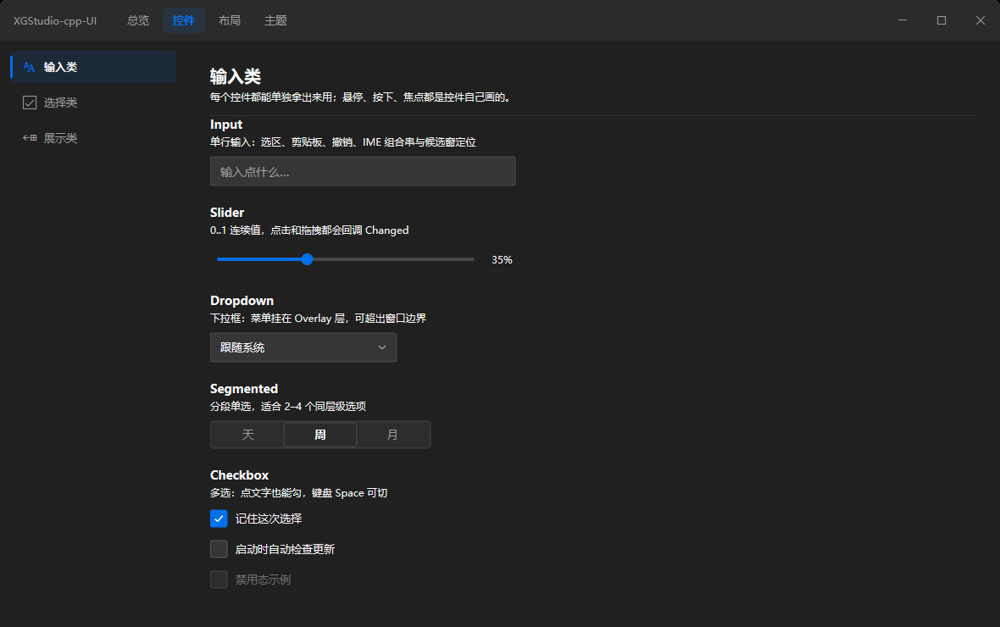

项目说明Project Overview
XGStudio-cpp-UI 是一套用 C++17 与 Direct2D 实现的 Windows 桌面控件库，版本 1.0.0，Apache-2.0 许可。
XGStudio-cpp-UI is a Windows desktop control library written in C++17 with Direct2D. Version 1.0.0, Apache-2.0.
这是什么What it is
这是一套完全自绘的控件库：窗口里不存在任何系统控件——没有 EDIT、没有 COMBOBOX、没有 BUTTON，
控件外形、文字、光标、选区、滚动条与阴影全部由 Direct2D 绘制。它面向需要统一视觉、又不想被系统主题和控件样式牵着走的 Windows 桌面程序。
This is a fully self-drawn control library: no system controls exist inside the window —
no EDIT, no COMBOBOX, no BUTTON. Shapes, text, carets, selections,
scrollbars and shadows are all painted with Direct2D. It targets Windows desktop applications that want a
consistent visual language without inheriting system control styling and theme drift.
库以单一 Fluent 2 底座组织视觉：尺寸由一套共享度量决定，颜色由一组语义色板决定，字号走官方 type ramp。 同一份界面在浅色 / 深色两档、Microsoft / GitHub 两套色板下都能直接成立，不需要为换肤重写控件。
A single Fluent 2 foundation drives the visuals: sizes come from one shared metric set, colours from a semantic palette, and font sizes from the official type ramp. The same interface holds up in light and dark modes across the Microsoft and GitHub palettes, with no control rewrites for re-theming.
技术栈Technology stack
| 方面Aspect | 选型Choice | 说明Notes |
|---|---|---|
| 语言Language | C++17 | MSVC 2019 / 2022MSVC 2019 / 2022 |
| 窗口与输入Window and input | Win32 | 自建消息循环，Per-Monitor V2 DPIOwn message loop, Per-Monitor V2 DPI |
| 图形Graphics | Direct2D 1.0Direct2D 1.0 | 持久离屏层，不依赖 D3D11 或 EffectsPersistent off-screen layer, no D3D11 or Effects dependency |
| 文字Text | DirectWrite | 文本布局缓存，Fluent type rampCached text layouts, Fluent type ramp |
| 构建Build | CMake | Visual Studio 2022 生成器，产物为静态库Visual Studio 2022 generator, static library output |
| 许可License | Apache-2.0 | 适合商用与再分发Suitable for commercial use and redistribution |
界面Interface
典型窗口由三部分组成：顶部是库自带的自绘标题栏（标题、可选导航、最小化 / 最大化 / 关闭三个系统按钮，整条栏可作为拖动区）， 下方是铺满剩余空间的内容区，内容通常由卡片、列表行与输入类控件组成。窗口默认使用自绘边框， 客户区吃掉整个窗口，同时保留系统投影、吸附与最大化动画。
A typical window has three parts: a custom-drawn title bar at the top (title, optional navigation, and the three system buttons, with the whole bar acting as a drag area), and a content area filling the rest, usually built from cards, list rows and input controls. The default custom frame lets the client area take the entire window while keeping system shadows, snapping and the maximise animation.


截图来自库内附带的展示程序，不是设计稿；点击可查看原图。
Screenshots are from the bundled demo application, not design mockups; click for full size.
- 视觉一致性：深浅切换与色板切换同步进行，标题栏明暗也跟着系统状态变更，不出现半深半浅的窗口。
- Visual consistency: mode and palette switch together, and the title bar dark state follows, so windows are never half dark.
- 中文与输入法：自绘文本框完整处理输入法组合串与候选窗，中文输入时组合串带下划线、候选窗贴在光标附近。
- Chinese input: the self-drawn text box fully handles IME composition and candidate windows, with underlined composition text and candidates placed next to the caret.
- 键盘可达：Tab 顺序、空格 / 回车激活、方向键步进、F4 展开下拉、Esc 关闭弹层全部可用，焦点环只在键盘操作时出现。
- Keyboard access: tab order, Space/Enter activation, arrow stepping, F4 dropdowns and Esc dismissal all work, and the focus ring appears only for keyboard use.
运行特征Runtime characteristics
渲染为消息驱动加脏矩形：事件只改控件树并标脏，绘制发生在重绘消息里；有动画时按合成节拍推进，静止时挂起等待消息。
Rendering is message-driven with dirty rectangles: events only mutate the widget tree and mark it dirty, painting happens on paint messages; animation follows the composition cadence and idles otherwise.
| 场景Scenario | 实测（低配测试机）Measured (low-end test machine) |
|---|---|
| 启动后内存Memory after launch | 12.7 MB |
| 空闲 CPU / GPUIdle CPU / GPU | 0 % / 0 % |
| 持续切页时 CPU / GPUCPU / GPU while switching pages | ≤ 5 % / ≤ 10 % |
| 单帧绘制Frame paint | < 12 ms |
测试机为 Intel Core i7-3520M、12GB DDR3、Intel HD Graphics 4000，使用库内展示程序。
Test machine: Intel Core i7-3520M, 12 GB DDR3, Intel HD Graphics 4000, running the bundled demo.
适用范围与限制Scope and limits
已知限制：滚动没有惯性余速；下拉只向下展开；跨屏 DPI 变化尚未实测重算；阴影是四层圆角位图叠加而非真高斯；切页只有新页入场动画。
Known limits: no inertial scrolling; dropdowns only open downwards; cross-monitor DPI changes are not recalculated at runtime; shadows are four stacked rounded bitmaps rather than a true Gaussian; page transitions animate only the incoming page.